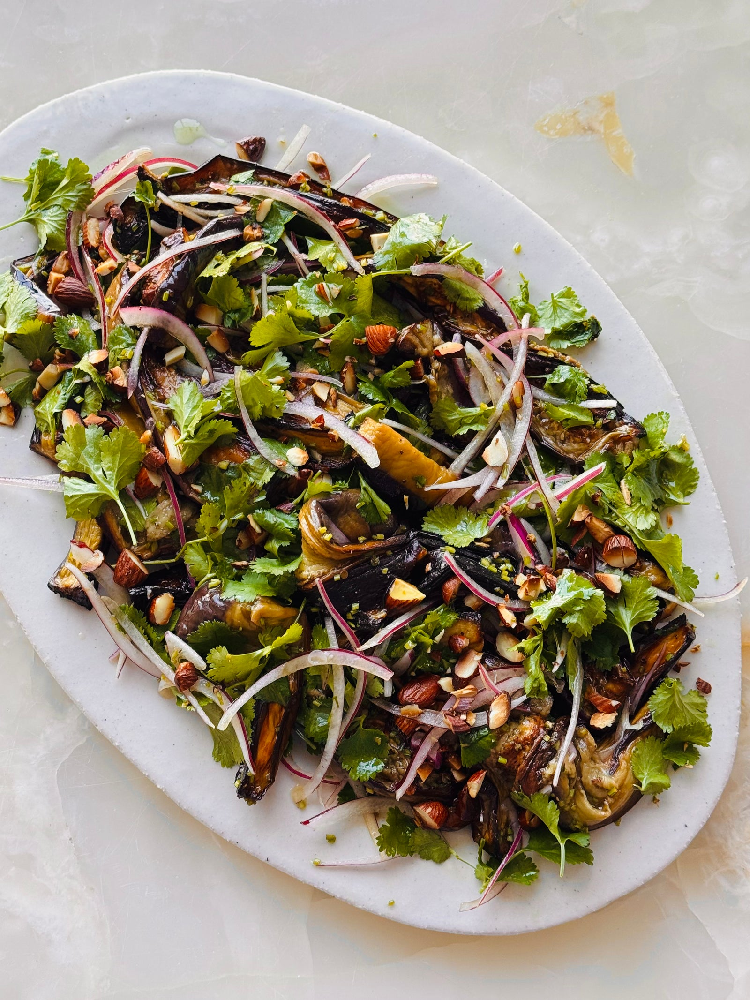

Pickled aubergine salad with sumac and almonds

If you peel the aubergines in alternating strips you end up with zebra stripes. The skin helps the wedges hold their shape in the oven, while the bare stripes soak up the dressing of red wine vinegar, maple syrup and garlic. Leave them for 30 minutes and the flavour turns truly pickled, so it's worth making ahead. It’s still delicious served warm, though, or at room temperature as a side, or stuff into sandwiches with yoghurt and a handful of crushed almonds.
Preheat the oven to 230°C.
Trim the stalks from the aubergines. Using a vegetable peeler, remove alternating strips of skin. Cut each aubergine in half lengthways, then cut each half into three long wedges.
Place the aubergine wedges on a large parchment-lined baking tray. Add 60ml of the oil, 1¼ teaspoons of salt and a generous grind of black pepper. Toss well to coat, then spread out in a single layer. Roast for about 35 minutes, or until deeply golden and tender.
Meanwhile, make the dressing. Whisk the remaining 45ml of olive oil with the vinegar, lemon juice, garlic, maple syrup, coriander stalks and ¼ teaspoon of salt in a large bowl.
Drain the soaked onion well and pat dry. Add it to the bowl along with the roasted aubergines, coriander leaves and almonds. Gently toss everything together until evenly coated, taking care not to break up the aubergines.
Transfer to a serving platter, sprinkle with the sumac, if using, and serve warm or at room temperature.